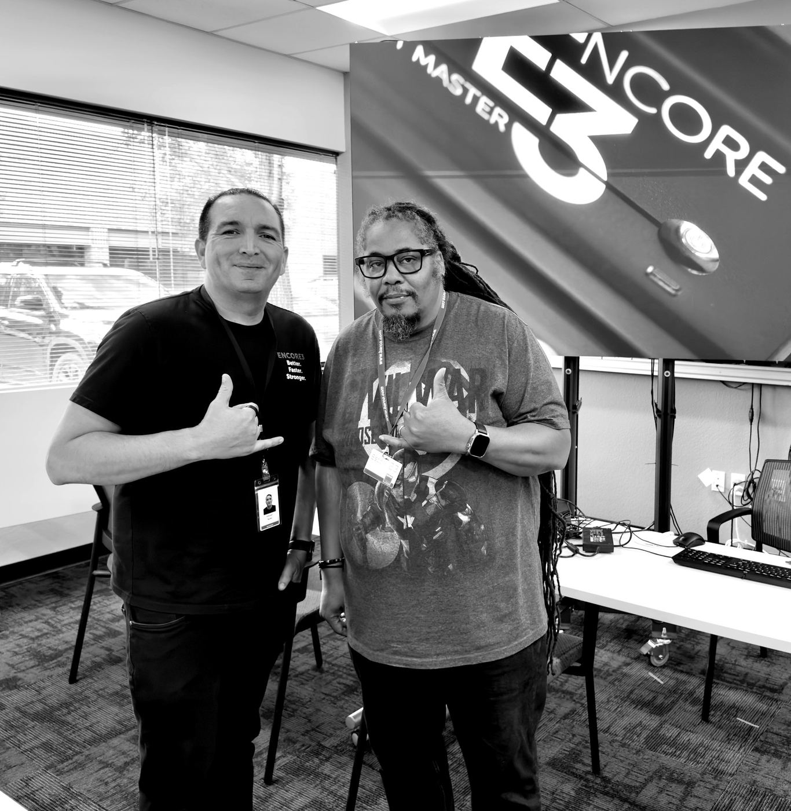
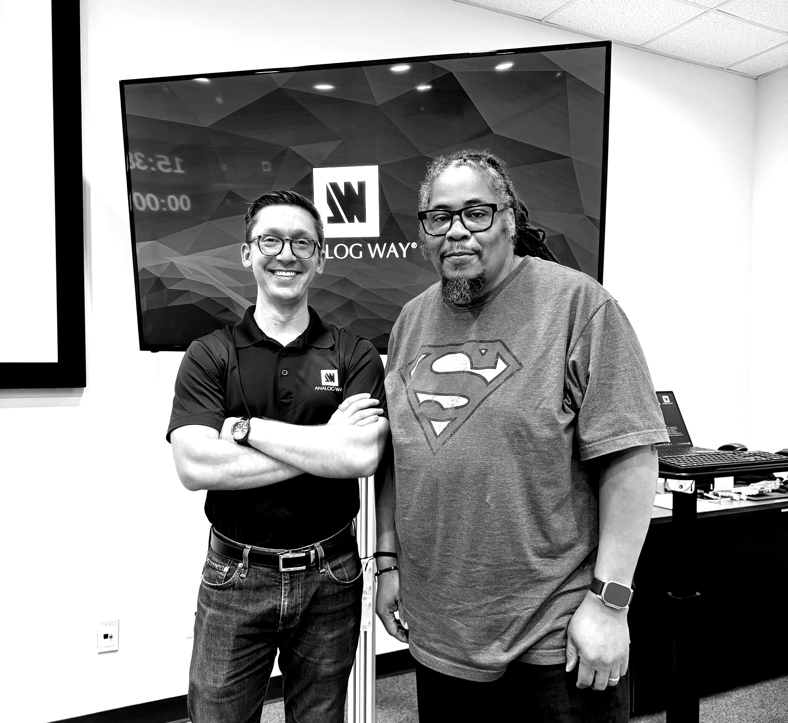
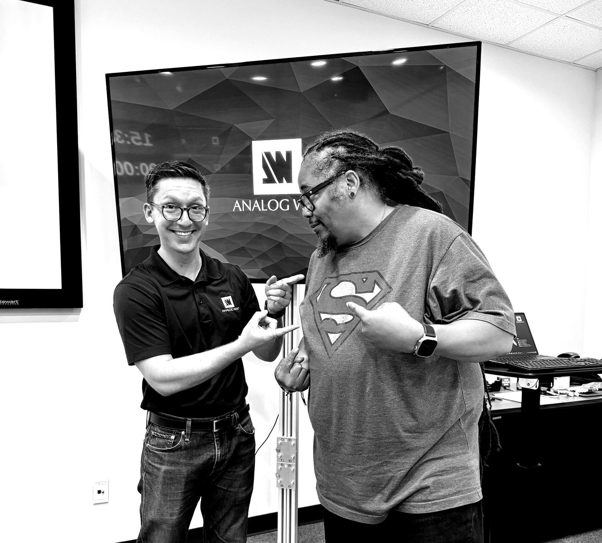

Live Appearance
I joined Office Hours Global for a live conversation on The Art of Cutting Live → — timing, anticipation, restraint, and the creative partnership between a TD and camera operators.
Clients & Collaborators
Clients
- LMG
- PRG
- Creative Technology Group
- Local 22
- Slate
- CNC Productions
- TMPAV
- Freeman AV
- AVFX
- Event EQ
- MayCo
- Projection
- CVW Events
- Encore
- First Hand
- AVLD Events
What I Do
ProAV High-Resolution Switcher Engineer
Image processing and switching systems that drive the audience-facing screens at a live event — LED walls, blended projection, multi-surface sets, IMAG side panels, confidence monitors.
Live Events
Technical Director, Camera Shader, and Robotic Camera Operator, Media Server Op. for concerts, conferences, and festivals — cutting the live program, matching camera color and exposure on the fly, and running PTZ robotics for more creative shots.
Video Production
Multicam camera technical direction and post-production for broadcast, corporate, live content, and video podcasts for wide and vertical screens.
Cloud Production
REMI workflows — multi-site production run from a single control room, venue to cloud via Cloudflex Broadcast, and AWS.
Analog Way Aquilon · Barco Encore3 · PixelHue Q8, P80, P20 Full credentials →